Direct Memory Access (DMA)#
The DMA module provides a hardware method of transferring data between peripherals and/or memory without intervention from the CPU, effectively freeing up the CPU for other functions.
Using the DMA is ideal when an application requires moving large amounts of data from an off-chip peripheral to on-chip memory. Specifically, the DMA can read data from the ADC result registers, transfer to or from memory blocks, and transfer to or from the various peripherals. Additionally, the DMA is capable of rearranging the data for optimal CPU processing such as binning and “ping-pong” buffering.
For dual core devices, each CPU subsystem has its own DMA.
Note:
For a complete list of peripherals connected to the DMA bus refer to your device’s datasheet.
DMA Memory Blocks: To view the amount of global shared RAM the DMA has access to please refer to the ‘Functional Block Diagram’ of your device’s datasheet.
A DMA transfer is started by a peripheral or software trigger. There are six independent DMA channels, where each channel can be configured individually and each DMA channel has its own unique PIE interrupt for CPU servicing. All six DMA channels operate the same way, except channel 1 which can be configured at a higher priority over the other five channels. At its most basic level the DMA is a state machine consisting of two nested loops and tightly coupled address control logic which gives the DMA the capability to rearrange the blocks of data during the transfer for post processing. When a DMA transfers is completed, the DMA can generate an interrupt.
Basic Operation#
DMA definitions
Type |
Description |
|---|---|
Word |
16 or 32 bit, configurable per DMA channel |
Burst |
Consists of multiple words, smallest amount of data transferred at one time |
Burst Size |
Number of words per burst, specified by |
Transfer |
Consists of multiple bursts |
Transfer Size |
Number of burst per transfer, specified by |
Simplified State Machine Operation
The DMA state machine at its most basic level is two nested loops. The most inner loop moves words based on the amount of bursts programmed. Afterwards, the process is repeated again for the number of transfers performed.
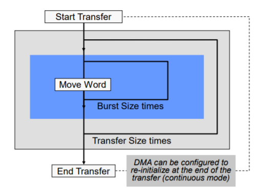
Basic Address Control Registers
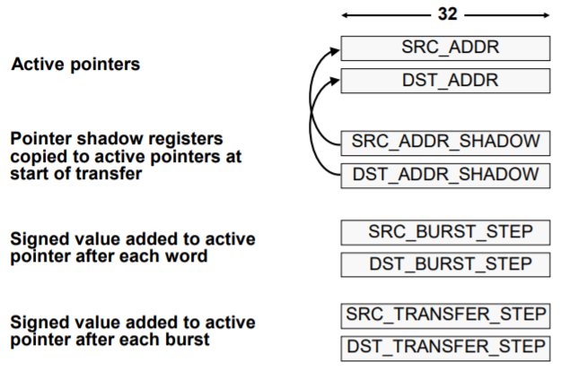
Simplified State Machine
The figure below illustrates the steps the DMA performs. Again, showing the two loops that occur, one to reach the amount of bursts and another to reach the number of transfers.
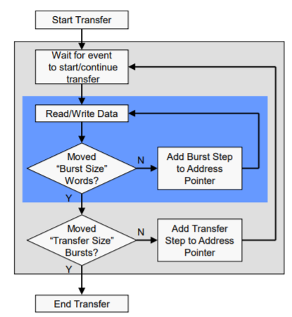
DMA Interrupts
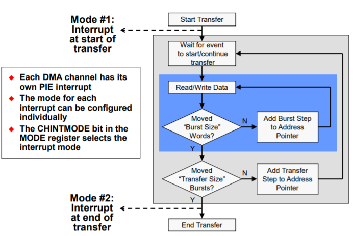
DMA Examples#
Example 1: Simple Example#
Objective: Move 4 words from memory location 0xF000 to memory location 0x4000 and interrupt CPU at end of transfer
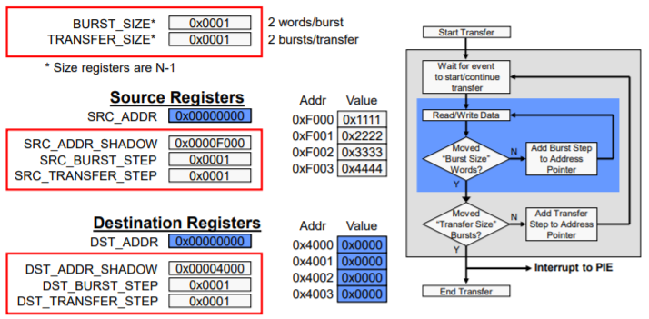
This example could also have been done using 1 word/burst and 4 bursts/transfer, or 4 words/burst and 1 burst/transfer. This would affect Round-Robin progression, but not interrupts.
Example 2: Data Binning#
Objective: Bin 3 samples of 5 ADC channels, then interrupt the CPU
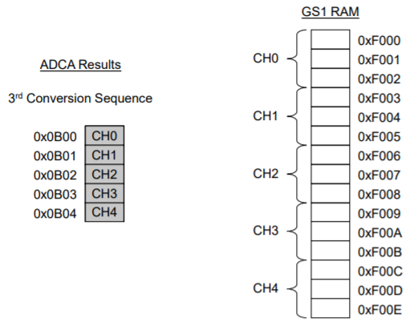
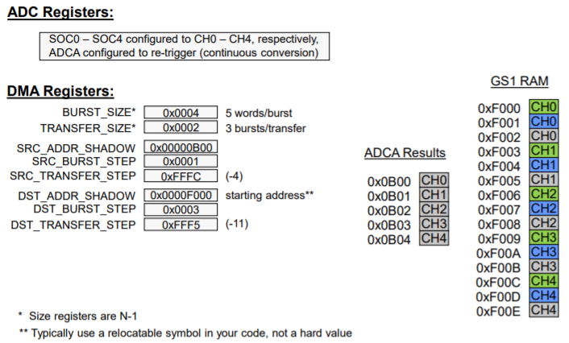
Example 3: Ping-Pong Buffer#
Objective: Buffer ADC channel 0 ping-pong style, 50 samples per buffer
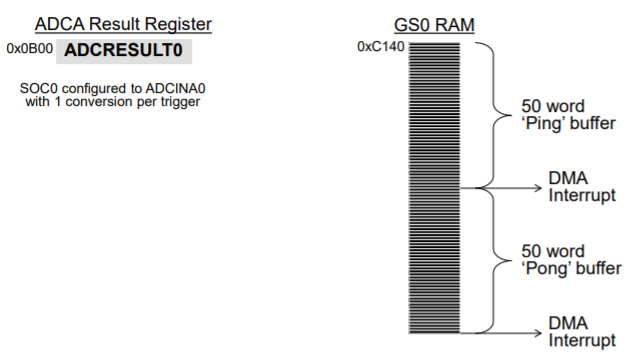
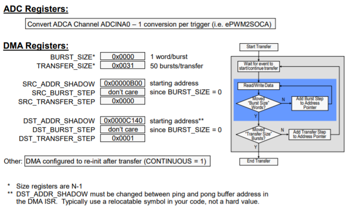
Channel Priority Modes#
Round Robin Mode#
All channels have equal priority
After each enabled channel has transferred a burst of words, the next enabled channel is serviced in round robin fashion
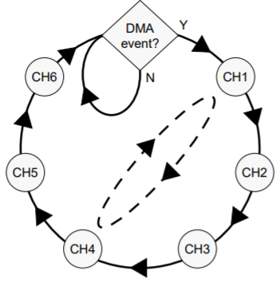
Channel 1 High Priority Mode#
Same as Round Robin except CH1 can interrupt DMA state machine
If CH1 trigger occurs, the current word (not the complete burst) on any other channel is completed and execution is halted
CH1 is serviced for complete burst
When completed, execution returns to previous active channel
This mode is intended primarily for the ADC, but can be used by any DMA event configured to trigger CH1
Priority Modes and the State Machine#
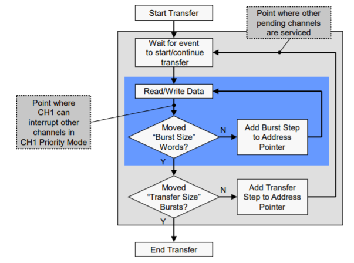
DMA Throughput#
4 cycles/word
1 cycle delay to start each burst
1 cycle delay returning from CH1 high priority interrupt
32-bit transfer doubles throughput
For devices which contain a McBSP module: The DMA does 5 cycles/word for McBSP reads and only supports 16-bit transfers while interfacing with the McBSP peripheral.
Example 1:
128 16-bit words from ADC to RAM 8 bursts × [(4 cycles/word × 16 words/burst) + 1] = 520 cycles
Example 2:
64 32-bit words from ADC to RAM 8 bursts × [(4 cycles/word × 8 words/burst) + 1] = 264 cycles
DMA vs. CPU Access Arbitration#
DMA has priority over CPU
If a multi-cycle CPU access is already in progress, DMA stalls until current CPU access finishes
The DMA will interrupt back-to-back CPU accesses
Can the CPU be locked out?
Generally, no
DMA is a multi-cycle transfer; CPU can access a location while the DMA is accessing the other end of the transfer (e.g. while DMA accesses destination location, the CPU can access the source location)
Feedback
Please provide any feedback you may have about the content within C2000 Academy to: c2000_academy_feedback@list.ti.com